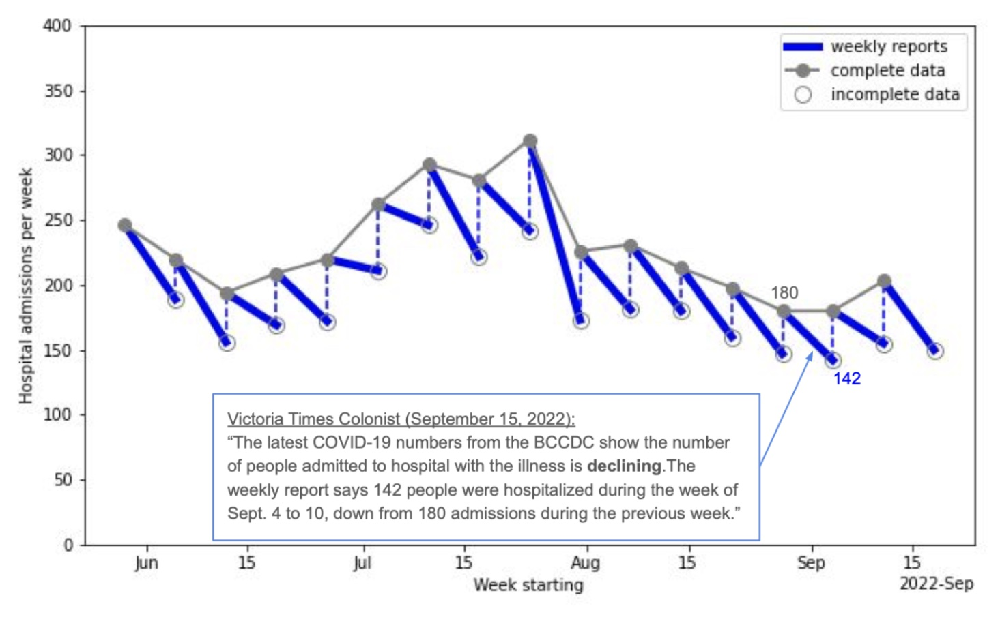
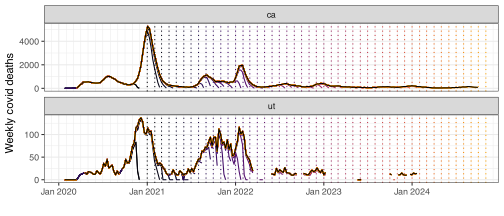

# A tibble: 6 × 4
geo_value time_value case_rate death_rate
<chr> <date> <dbl> <dbl>
1 ak 2020-12-31 35.9 0.158
2 al 2020-12-31 65.1 0.438
3 ar 2020-12-31 66.0 1.27
4 az 2020-12-31 76.8 1.10
5 ca 2020-12-31 95.9 0.755
6 co 2020-12-31 37.8 0.376Data Cleaning, Versioning, Nowcasting With {epiprocess}
MICOM Tooling Workshop 2025
David Weber, Nat DeFries
Adapted from slides by Alice Cima, Rachel Lobay, Daniel McDonald, Ryan Tibshirani, with huge thanks to Logan Brooks, Xueda Shen, and Dmitry Shemetov
12 August 2025
1 Epiverse Software Ecosystem
Epi. data processing with epiprocess
epiprocessis a package that offers additional functionality to pre-process epidemiological data.- You can work with an
epi_dflike you can with a tibble by using dplyr verbs. - For example, on
cases_df, we can easily useepi_slide_mean()to calculate trailing 14 day averages of cases:
An `epi_df` object, 93 x 6 with metadata:
* geo_type = state
* time_type = day
* as_of = 2024-01-01
# A tibble: 93 × 6
# Groups: geo_value [3]
geo_value time_value raw_cases pop scaled_cases smoothed_scaled_cases
<chr> <date> <dbl> <dbl> <dbl> <dbl>
1 ca 2022-03-01 4310 39512223 10.9 10.9
2 ca 2022-03-02 7044 39512223 17.8 14.4
3 ca 2022-03-03 7509 39512223 19.0 15.9
4 ca 2022-03-04 3586 39512223 9.08 14.2
5 ca 2022-03-05 1438 39512223 3.64 12.1
6 ca 2022-03-06 6465 39512223 16.4 12.8
7 ca 2022-03-07 6690 39512223 16.9 13.4
8 ca 2022-03-08 3424 39512223 8.67 12.8
9 ca 2022-03-09 4591 39512223 11.6 12.7
10 ca 2022-03-10 5359 39512223 13.6 12.8
# ℹ 83 more rowsEpi. data processing with epiprocess
It is easy to produce an autoplot of the smoothed confirmed daily cases for each geo_value: ::: {.cell layout-align=“center”}
:::
Epi. data processing with epiprocess
Alternatively, we can display both the smoothed and the original daily case rates:
Now, before exploring some more features of epiprocess, let’s have a look at the epiverse software ecosystem it’s part of…
The epiverse ecosystem
Interworking, community-driven, packages for epi tracking & forecasting.

2 Panel and Versioned Data in the Epiverse
What is panel data?
- Recall that panel data, or longitudinal data, contain cross-sectional measurements of subjects over time.
- Built-in example:
covid_case_death_ratesdataset, which is a snapshot as of May 31, 2022 that contains daily state-wise measures ofcase_rateanddeath_ratefor COVID-19 over 2021:
- How do we store & work with such snapshots in the epiverse software ecosystem?
epi_df: Snapshot of a dataset
- You can convert panel data into an
epi_dfwith the requiredgeo_valueandtime_valuecolumns
Therefore, an epi_df is…
a tibble that requires columns
geo_valueandtime_value.arbitrary additional columns containing measured values
additional keys to index (
age_group,ethnicity, etc.)
epi_df
Represents a snapshot that contains the most up-to-date values of the signal variables, as of a given time.
epi_df: Snapshot of a dataset
Consider the same dataset we just encountered on JHU daily COVID-19 cases and deaths rates from all states as of May 31, 2022.
We can see that it meets the criteria
epi_df(hasgeo_valueandtime_valuecolumns) and that it contains additional metadata (i.e.geo_type,time_type,as_of, andother_keys).
An `epi_df` object, 6 x 4 with metadata:
* geo_type = state
* time_type = day
* as_of = 2023-03-10
# A tibble: 6 × 4
geo_value time_value case_rate death_rate
<chr> <date> <dbl> <dbl>
1 ak 2020-12-31 35.9 0.158
2 al 2020-12-31 65.1 0.438
3 ar 2020-12-31 66.0 1.27
4 az 2020-12-31 76.8 1.10
5 ca 2020-12-31 95.9 0.755
6 co 2020-12-31 37.8 0.376Examples of preprocessing
EDA features
- Making locations commensurate (per capita scaling)
- Correlating signals across location or time
- Computing growth rates
- Detecting and removing outliers
- Calculating summaries with rolling windows
- Dealing with revisions
Features - Correlations at different lags
The below plot addresses the question: “For each state, are case and death rates linearly associated across all days?”
To explore lagged correlations and how case rates associate with future death rates, we can use the
dt1parameter inepi_cor()to shift case rates by a specified number of days.
- We can see that, in general, lagging the case rates back by 14 days improves the correlations.
Features - Systematic lag analysis
The analysis helps identify the lag at which case rates from the past have the strongest correlation with future death rates.

The strongest correlation occurs at a lag of about 23 days, indicating that case rates are best correlated with death rates 23 days from now.
Features - Compute growth rates
Growth rate measures the relative change in a signal over time.
We can compute time-varying growth rates for the two states, and see how this cases evolves over time.
- As expected, the peak growth rates for both states occurred during the January 2022 Omicron wave, reflecting the sharp rise in cases over that period.
Features - Outlier detection
The
detect_outlr()function offers multiple outlier detection methods on a signal.The simplest is
detect_outlr_rm(), which works by calculating an outlier threshold using the rolling median and the rolling Interquartile Range (IQR) for each time point:
Threshold = Rolling Median ± (Detection Multiplier × Rolling IQR)
- Note that the default number of time steps to use in the rolling window by default is 21 and is centrally aligned.
- The detection multiplier default is 2 and controls how far away a data point must be from the median to be considered an outlier.
Features - Outlier detection
Several data points that deviate from the expected case cadence have been flagged as outliers, and may require further investigation.
However, the peak in Jan. 2022 has also been flagged as an outlier. This highlights the importance of manual inspection before correcting the data, as these may represent valid events (e.g., a genuine surge in cases).

Features – sliding a computation on an epi_df
It is often useful to compute rolling summaries of signals.
These depend on the reference time, and are computed separately over geographies (and other groups).
For example, a trailing average can smooth out daily variation.
In
epiprocess, this is achieved byepi_slide().
For example, we can use epi_slide() to compute a trailing 7-day average.
Features – sliding a computation on an epi_df
The simplest way to use
epi_slideis tidy evaluation.For a grouped
epi_df,epi_slide()applies the computation to groups separately.
# A tibble: 6 × 4
geo_value time_value raw_cases cases_7dav
<chr> <date> <dbl> <dbl>
1 ca 2022-03-01 4310 4310
2 ca 2022-03-02 7044 5677
3 nc 2022-03-01 1231 1231
4 nc 2022-03-02 2243 1737
5 ny 2022-03-01 1487 1487
6 ny 2022-03-02 1889 1688Features – sliding a computation on an epi_df
epi_slide also accepts custom functions of a certain form.
x: the data frame with all the columns with original object except groupping vars.g: the one-row tibble with values of gropping vars of the given group.t: the.ref_time_valueof the current window....: additional arguments.
Features – sliding a computation on an epi_df
# A tibble: 3 × 4
geo_value time_value raw_cases cases_7dav
<chr> <date> <dbl> <dbl>
1 ca 2022-03-01 4310 4310
2 nc 2022-03-01 1231 1231
3 ny 2022-03-01 1487 1487epi_archive: Collection of epi_dfs
- full version history of a data set
- acts like a bunch of
epi_dfs — but stored compactly - allows similar functionality as
epi_dfbut using only data that would have been available at the time
Revisions
Epidemiology data gets revised frequently.
- We may want to use the data as it looked in the past.
- or we may want to examine the history of revisions.
epi_archive: Collection of epi_dfs
Subset of daily COVID-19 doctor visits (Optum) and cases (JHU CSSE) from all U.S. states in archive format:
$DT
Key: <geo_value, time_value, version>
geo_value time_value version percent_cli case_rate_7d_av
<char> <Date> <Date> <num> <num>
1: ak 2020-06-01 2020-06-02 NA 1.145652
2: ak 2020-06-01 2020-06-06 0.136815 1.145652
3: ak 2020-06-01 2020-06-08 0.136249 1.145652
4: ak 2020-06-01 2020-06-09 0.106744 1.145652
5: ak 2020-06-01 2020-06-10 0.106676 1.145652
---
1514485: wy 2021-11-26 2021-11-29 3.739819 23.207343
1514486: wy 2021-11-27 2021-11-28 NA 23.207343
1514487: wy 2021-11-28 2021-11-29 NA 23.207343
1514488: wy 2021-11-29 2021-11-30 NA 25.071781
1514489: wy 2021-11-30 2021-12-01 NA 25.464294
$geo_type
[1] "state"
$time_type
[1] "day"
$other_keys
character(0)
$clobberable_versions_start
[1] NA
$versions_end
[1] "2021-12-01"Features – sliding computation over epi_archives
- We can apply a computation over different snapshots in an
epi_archive.
This functionality is very helpful in version aware forecasting. We will return with a concrete example.
Features – summarize revision behavior
revision_analysis()is a helper function that summarizes revision behavior of anepix_archive.
revision_data <- revision_analysis(
archive_cases_dv_subset,
case_rate_7d_av,
drop_nas = TRUE,
min_waiting_period = as.difftime(60, units = "days"),
within_latest = 0.2,
compactify_abs_tol = .Machine$double.eps^0.5,
)
revision_data min median mean max
1 days 1 days 1 days 2 days min median mean max
1 days 1 days 1.7 days 84 daysFeatures – summarize revision behavior
# A tibble: 6 × 11
time_value geo_value n_revisions min_lag max_lag lag_near_latest spread
<date> <chr> <dbl> <drtn> <drtn> <drtn> <dbl>
1 2020-06-01 ca 12 1 days 546 days 1 days 0.248
2 2020-06-02 ca 12 1 days 545 days 1 days 0.416
3 2020-06-03 ca 11 1 days 544 days 1 days 0.115
4 2020-06-04 ca 11 1 days 543 days 1 days 0.342
5 2020-06-05 ca 7 1 days 520 days 1 days 0.0982
6 2020-06-06 ca 8 1 days 519 days 1 days 0.188
# ℹ 4 more variables: rel_spread <dbl>, min_value <dbl>, max_value <dbl>,
# median_value <dbl>Visualize revision patterns

Finalized data
Counts are revised as time proceeds
Want to know the final value
Often not available until weeks/months later
- Forecasting
- At time \(t\), predict the final value for time \(t+h\), \(h > 0\)
- Backcasting
- At time \(t\), predict the final value for time \(t-h\), \(h < 0\)
- Nowcasting
- At time \(t\), predict the final value for time \(t\)
3 Basic Nowcasting in the Epiverse
Backfill Canadian edition
Every week the BC CDC releases COVID-19 hospitalization data.
Following week they revise the number upward (by ~25%) due to lagged reports.

- Takeaway: Once the data is backfilled, hospitalizations rarely show a decline, challenging the common media narrative.
Nowcasting and its mathematical setup
Nowcasting: Predict a finalized value from a provisional value.
Suppose today is time \(t\)
Let \(y_i\) denote a series of interest observed at times \(i=1,\ldots, t\).
Our goal
- Produce a point nowcast for the finalized values of \(y_t\).
- Accompany with time-varying prediction intervals
- We may also have access to \(p\) other time series \(x_{ij},\; i=1,\ldots,t, \; j = 1,\ldots, p\) which may be subject to revisions.
Case study: NCHS mortality
- In this example, we’ll demonstrate the concept of nowcasting using NHCS mortality data. (the number of weekly new deaths with confirmed or presumed COVID-19, per 100,000 population).
- We will work with provisional data (real-time reports) and compare them to finalized data (final reports).
- The goal is to estimate or nowcast the mortality rate for weeks when only provisional data is available.
Fetch versioned data
Let’s fetch versioned mortality data from the API (pub_covidcast) for CA (geo_values = "ca") and the signal of interest (deaths_covid_incidence_num) over early 2024.
# Fetch the versioned NCHS mortality data (weekly)
nchs_archive <- pub_covidcast(
source = "nchs-mortality",
signals = "deaths_covid_incidence_num",
geo_type = "state",
time_type = "week",
geo_values = c("ca", "ut"),
time_values = epirange(202001, 202440),
issues = "*"
) |>
select(geo_value, time_value, version = issue, mortality = value) |>
as_epi_archive(compactify = TRUE)Analysis of versioning behavior
Recall, we need to watch out for:
- Latency the time difference between date of reference and date of the initial report
- Backfill how data for a given date is updated after initial report.
revision_analysis() provides a summary of both aspects.
Versioning analysis – latency
- Question: What is the latency of NCHS data?
# A tibble: 10 × 3
geo_value time_value min_lag
<chr> <date> <drtn>
1 ca 2024-04-07 1 weeks
2 ut 2021-09-12 1 weeks
3 ca 2022-03-27 2 weeks
4 ca 2021-02-28 1 weeks
5 ca 2020-08-02 18 weeks
6 ut 2021-11-07 1 weeks
7 ut 2022-04-24 1 weeks
8 ut 2022-06-19 2 weeks
9 ut 2023-02-19 1 weeks
10 ca 2022-05-15 2 weeks- We randomly sampled some dates to check if there is a consistent latency pattern.
- Understanding latency prevents us from using data that we shouldn’t have access to.
Versioning analysis – backfill
- Question: How long does it take for the reported value to be close to the finalized value?
revision_data$revision_behavior |> select(geo_value, time_value, lag_near_latest) |> slice_sample(n = 10)# A tibble: 10 × 3
geo_value time_value lag_near_latest
<chr> <date> <drtn>
1 ut 2020-05-31 27 weeks
2 ca 2021-04-04 5 weeks
3 ut 2022-08-07 2 weeks
4 ca 2022-08-21 3 weeks
5 ca 2023-07-23 3 weeks
6 ut 2020-03-29 36 weeks
7 ca 2020-11-01 5 weeks
8 ca 2024-03-31 4 weeks
9 ca 2024-07-14 3 weeks
10 ca 2024-08-18 3 weeks - It generally takes at least 4 weeks for reported value to be within 20% (default in
revision_analysis()) of the finalized value. - We can change the threshold of percentage difference by specifying the
within_latestargument ofrevision_analysis().
Versioning analysis - backfill
- Question: When is the finalized value first attained for each date? Would we have access to any in real-time?
- How fast are the final values attained & what’s the pattern for these times, if any?
# A tibble: 6 × 4
geo_value time_value min_version time_to_final
<chr> <date> <date> <drtn>
1 ca 2020-01-26 2020-12-06 315 days
2 ca 2020-02-09 2020-12-06 301 days
3 ca 2020-02-23 2020-12-06 287 days
4 ca 2020-03-15 2020-12-06 266 days
5 ca 2020-03-22 2021-05-16 420 days
6 ca 2020-03-29 2021-04-04 371 days - Conclusion: The revision behavior is pretty long-tailed. Value reported 4 weeks later is reasonably close to the finalized value.
Revision pattern visualization
This shows the finalized rates in comparison to multiple revisions to see how the data changes over time:

Revision pattern visualization
Ratio nowcaster: jumping from provisional to finalized value
- Recall, the goal of nowcast at date \(t\) is to use project the finalized value of \(y_t,\) given the information available on date \(t\).
- A very simple nowcaster is the ratio between finalized and provisional value.
How can we sensibly estimate this quantity?
Ratio nowcaster: building training samples
- At nowcast date \(t,\) would have received reports with versions up to and including \(t.\)
- We need to build training samples, which
- correctly aligns finalized value against provisional value
- uses features that would have been available at test time
- have enough samples to ensure sensible estimation results
- Build training samples by treating dates prior to date \(t\) as actual nowcast dates.
- What is the provisional data on that date?
- Have we received finalized value for that date?
Ratio nowcaster: building training samples
- At an earlier nowcast date \(t_0,\) we define
- Provisional value as the reported value of \(Y_{s_0}\) with version \(t_0.\) Here \(s_0\) is the largest occurence date among all values reported up until \(t_0.\)
- Finalized value as the (potentially unobserved) finalized value of \(Y_{s_0}.\)
- We only know in hindsight when reported value of \(Y_{s_0}\) is finalized – need an approximation.
Revisiting revision_analysis()
Recall, revision_analysis() reports the number of days to be within 20% (default value) of finalized value
# A tibble: 5 × 3
geo_value time_value lag_near_latest
<chr> <date> <drtn>
1 ca 2024-02-18 4 weeks
2 ut 2023-12-03 3 weeks
3 ut 2022-10-16 3 weeks
4 ca 2020-12-20 8 weeks
5 ut 2022-09-11 3 weeks 0% 25% 50% 75% 100%
NA NA NA NA NA Let’s say data reported NA days after reference date is good enough to be considered finalized.
Ratio nowcaster: test time feature
- Due to latency, provisional values may not be available at lag 0
- We use last-observation-carried-forward (LOCF) to impute missing values at test time
- Precisely, at test time \(t,\) we use last observed data point (among all those reported up through time \(t\))
Nowcasting at a single date: building training samples
- Searching for provisional values, at previous hypothetical nowcast dates.
- Searching for finalized values, at previous hypothetical nowcast dates.
Nowcasting at a single date: estimating ratio model
- After searching for both provisional and finalized values, we merge them together and estimate the ratio. ::: {.cell layout-align=“center”}
ratio <- finalized_data |>
inner_join(initial_data, by = c("geo_value", "time_value")) |>
mutate(ratio = finalized_val / initial_val) |>
pull(ratio) |>
median(na.rm = TRUE):::
Nowcasting at a single date: test feature construction
Nowcasting at a single date: producing the nowcast
nowcast <- last_avail * ratio
finalized_val <- epix_as_of(nchs_archive, nchs_archive$versions_end) |>
filter(time_value == nowcast_date) |>
pull(mortality)
nowcast_final = data.frame(Nowcast = nowcast, `Finalized value` = finalized_val, check.names=FALSE)
knitr::kable(nowcast_final)| Nowcast | Finalized value |
|---|---|
| NA | 948 |
Nowcasting for multiple dates
- All previous manipulations should really be seen as a template for all nowcast dates.
- The template computation sould be applied over all nowcast dates, but we must respect data versioning!
epix_slide()is designed just for this! It behaves similarly toepi_slide.- Key exception:
epix_slide()is version aware: the sliding computation at any reference time \(t\) is performed on data that would have been available as of t.
Nowcasting for multiple dates via epix_slide()
We begin by templatizing our previous operations.
nowcaster <- function(x, g, t, wl=180, appx=approx_final_lag) {
initial_data <- x$DT |>
group_by(geo_value, time_value) |>
filter(version == min(version)) |>
filter(time_value >= t - wl - appx & time_value <= t - appx) |>
rename(initial_val = mortality) |>
select(geo_value, time_value, initial_val)
finalized_data <- x$DT |>
group_by(geo_value, time_value) |>
filter(version == max(version)) |>
filter(time_value >= t - wl - appx & time_value <= t - appx) |>
rename(finalized_val = mortality) |>
select(geo_value, time_value, finalized_val)
ratio <- finalized_data |>
inner_join(initial_data, by = c("geo_value", "time_value")) |>
mutate(ratio = finalized_val / initial_val) |>
pull(ratio) |>
median(na.rm = TRUE)
last_avail <- epix_as_of(x, t) |>
slice_max(time_value) |>
pull(mortality)
tibble(geo_value = x$geo_value, target_date = t, nowcast = last_avail * ratio)
}Sanity check of epix_slide()
slided_nowcast_1d = epix_slide(
.x = nchs_archive,
.f = nowcaster,
.before = Inf,
.versions = nowcast_date,
.all_versions = TRUE
)
nowcast_check = data.frame(`Manual nowcast` = nowcast, `Slided nowcast` = slided_nowcast_1d$nowcast, check.names = FALSE)
knitr::kable(nowcast_check)| Manual nowcast | Slided nowcast |
|---|---|
| NA | NA |
Nowcasting for multiple dates via epix_slide()
Details of epix_slide()
.finepix_slide()can be specified with the same form of custom function asepi_slide().
- Mandatory variables of
.fwould have different forms depending on the value of.all_versions.
Details of epix_slide()
- When
.all_versions = FALSE,epix_slide()essentially iterates the templatized computation over snapshots. - Said differently, when
.all_versions = FALSE, data accessed at any sliding iteration only involves a single version.
- Hence:
x: anepi_dfwith same column names as archive’sDT, minus theversioncolumn.g: a one-row tibble containing the values of groupping variables of the associated group.t: theref_time_valueof the current window....: additional arguments.
Details of epix_slide()
- When
.all_versions = FALSE, data accessed at any sliding iteration involves versions up to and including .version.
- Hence:
x: anepi_archive, with version up to and including.version.g: a one-row tibble containing the values of groupping variables of the associated group.t: the.versionof the current window....: additional arguments.
Details of epix_slide()
Details of epix_slide()
nowcaster <- function(x, g, t, wl=180, appx=approx_final_lag) {
initial_data <- x$DT |>
group_by(geo_value, time_value) |>
filter(version == min(version)) |>
filter(time_value >= t - wl - appx & time_value <= t - appx) |>
rename(initial_val = mortality) |>
select(geo_value, time_value, initial_val)
finalized_data <- x$DT |>
group_by(geo_value, time_value) |>
filter(version == max(version)) |>
filter(time_value >= t - wl - appx & time_value <= t - appx) |>
rename(finalized_val = mortality) |>
select(geo_value, time_value, finalized_val)
ratio <- finalized_data |>
inner_join(initial_data, by = c("geo_value", "time_value")) |>
mutate(ratio = finalized_val / initial_val) |>
pull(ratio) |>
median(na.rm=TRUE)
last_avail <- epix_as_of(x, t) |>
slice_max(time_value) |>
pull(mortality)
tibble(geo_value = x$geo_value, target_date = t, nowcast = last_avail * ratio)
}Visualize nowcasts
We are now finally able to compare nowcasts against first available reports:

- The real-time counts tend to be biased below the finalized counts. Nowcasted values tend to provide a much better approximation of the truth (at least for these dates).
Smoothing nowcasts
- Nowcasts are quite volatile, reflecting the provisional counts are far from complete.
- We can use a trailing average to smooth them.

Evaluation using MAE
Assume we have prediction \(\hat y_{t}\) for the provisional value at time \(t\).
Then for \(y_{t}\) over times \(t = 1, \dots, N\), then we may compute error metrics like mean absolute error (MAE).
MAE measures the average absolute difference between the nowcast and finalized values.
\[MAE = \frac{1}{N} \sum_{t=1}^N |y_{t}- \hat y_{t}|\]
- Note that it’s scale-dependent, meaning it can vary depending on the units of the data (e.g., cases, deaths, etc.).
Evaluation using MAE
Let’s numerically evaluate our point nowcasts for the provisional values of a time series (e.g., COVID-19 mortality) using MAE.
| Smoothed MAE | Unsmoothed nowcast MAE | Provisional value MAE |
|---|---|---|
| NaN | NaN | 201.0909 |

Nowcasting — cmu-delphi/micom-tooling-workshop-2025